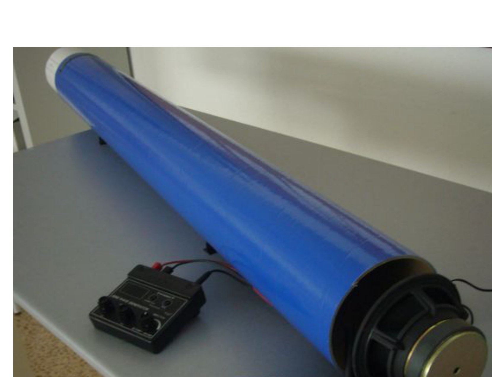
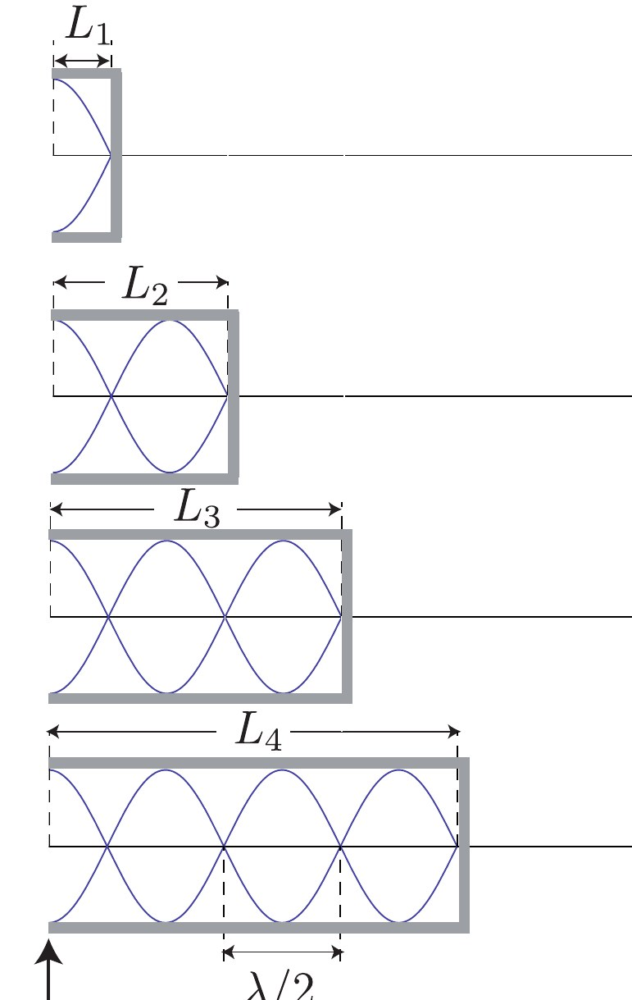
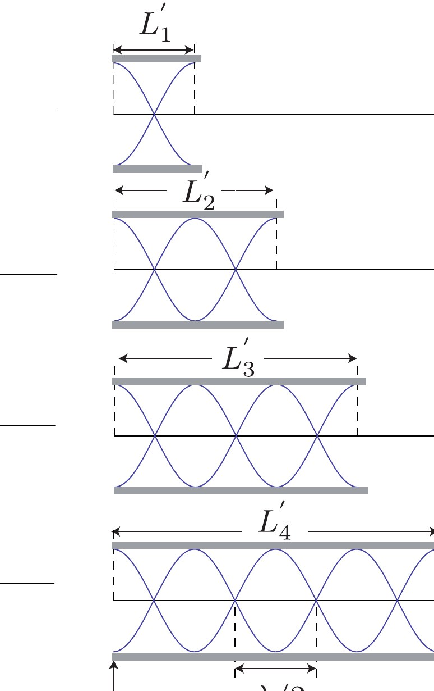
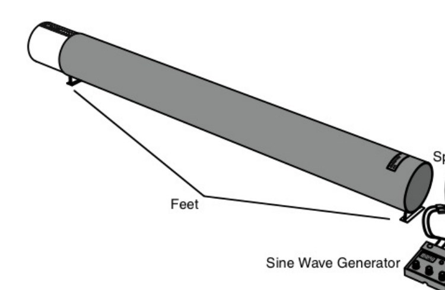
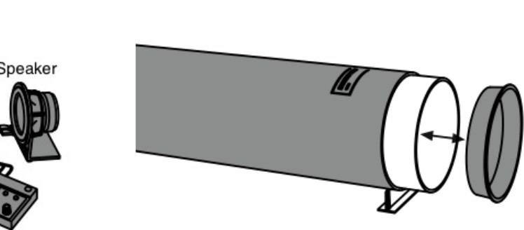
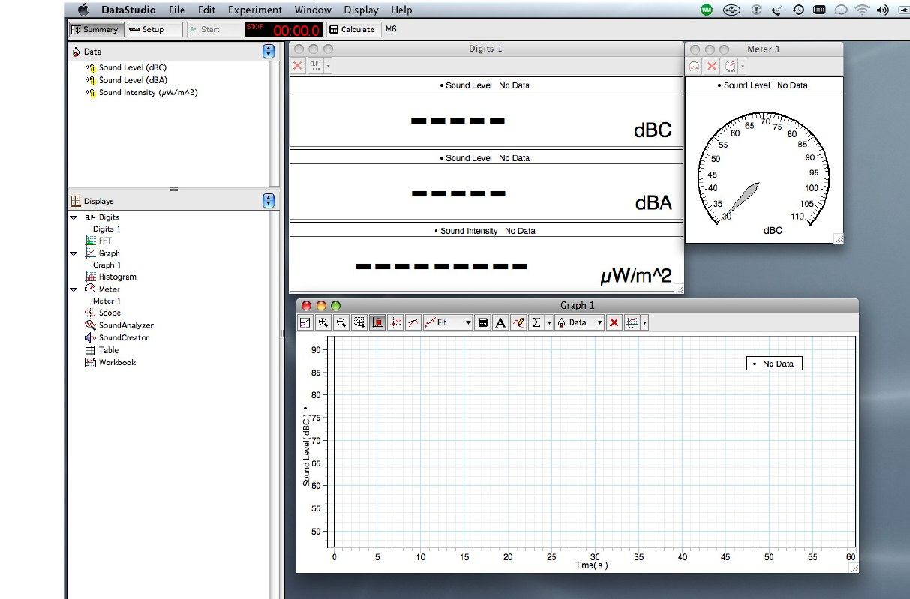

Prácticas de Laboratorio — UNED
2024-10-26
Medida de la velocidad del sonido en el aire por el método de resonancias en un tubo cerrado; identificación de longitudes resonantes para una frecuencia dada.

Tubo de resonancia utilizado en el laboratorioEn esta práctica se medirá la velocidad del sonido en el aire a temperatura ambiente.
Para ello se estudiarán ondas estacionarias de sonido en un tubo de resonancia, utilizando el fenómeno de la resonancia acústica para identificar configuraciones geométricas particulares (longitudes del tubo) en las que el sonido se amplifica de forma notable.
La velocidad v de cualquier onda está relacionada con su frecuencia f y su longitud de onda \lambda mediante
v = \lambda f \tag{1}
Esta ecuación será la base para conseguir el objetivo de la práctica: determinar v a partir del estudio de las ondas estacionarias que se forman en el interior de un tubo, para distintas frecuencias de excitación.
Cuando una onda viaja por un medio y encuentra reflexiones adecuadas (como en los extremos de un tubo), la superposición de ondas incidentes y reflejadas puede dar lugar a ondas estacionarias. En estas ondas aparecen:
En un tubo con uno o dos extremos abiertos/cerrados, la posición de nodos y antinodos viene determinada por las condiciones físicas en los extremos: en un extremo cerrado la velocidad del aire debe anularse (nodo de velocidad), mientras que en un extremo abierto la variación de presión se anula (antinodo de velocidad).
Consideremos un tubo con un extremo cerrado y el otro abierto.
En el extremo cerrado se forma un nodo de desplazamiento; en el extremo abierto, un antinodo. Las configuraciones de resonancia se obtienen cuando la longitud del tubo L admite un número semientero de cuartos de longitud de onda:
En general, para un tubo con un extremo cerrado y el otro abierto:
L = \frac{(2n-1)\,\lambda_n}{4} \quad (n=1,2,3,\dots) \tag{2}
En la situación ideal el antinodo se situaría exactamente en la boca del tubo. En la situación real aparece una corrección de extremo, que suele representarse mediante un parámetro a:
L = \frac{(2n-1)\,\lambda_n}{4} + a
donde a es pequeño comparado con L, pero no despreciable si queremos determinar v con precisión.
En la práctica, representando la longitud efectiva del aire frente al número de modo correspondiente, se puede ajustar una recta cuya pendiente está relacionada con \lambda y cuya ordenada en el origen proporciona una estimación de a.
Si ambos extremos del tubo están abiertos, en cada extremo se forma un antinodo. En este caso, las configuraciones de resonancia se corresponden con múltiplos de media longitud de onda:
En general:
L = \frac{n\,\lambda_n}{2} \quad (n=1,2,3,\dots) \tag{3}
De nuevo, en la situación real surge una corrección de extremo a', y la ecuación queda
L = \frac{n\,\lambda_n}{2} + a'
donde a' representa el desplazamiento efectivo del antinodo respecto al borde del tubo.
Usando la relación general (1), las frecuencias de resonancia vienen dadas, en función de la longitud efectiva del tubo, por
f_n = \frac{v}{\lambda_n} \tag{4}
donde \lambda_n debe sustituirse por la expresión correspondiente, según se trate de un tubo con un extremo cerrado (ecuación (2)) o de un tubo abierto en ambos extremos (ecuación (3)).
Con estas relaciones es posible, a partir de las longitudes de resonancia y de las frecuencias utilizadas, obtener una estimación de v y de las correcciones de extremo a y a'.
El dispositivo de medida que utilizaremos es un tubo de resonancia.
En realidad se trata de dos tubos concéntricos:
En el extremo donde está situado el altavoz se puede colocar una tapa de plástico, de manera que:
De este modo, con el mismo dispositivo se pueden estudiar tanto un tubo con un extremo cerrado como un tubo abierto en ambos extremos.
Adicionalmente, el micrófono está conectado a una interfaz de adquisición de datos, que a su vez se comunica con el ordenador (programa DataStudio). El programa muestra, en función de la posición del micrófono, señales relacionadas con:
Estas magnitudes se utilizan para identificar las configuraciones de resonancia.





DataStudio está instalado en el ordenador del laboratorio. El programa permite visualizar y registrar las señales provenientes del micrófono, variando en cada caso la sensibilidad del sensor y el tipo de medida.
Encienda el ordenador.
Si el ordenador ya está encendido, asegúrese de que ningún otro grupo esté utilizando el sistema de adquisición antes de continuar.
Abra el archivo denominado “M6”, que lanzará el programa DataStudio con la configuración adecuada para esta práctica.
Conecte y encienda el generador de ondas (o generador de funciones) que alimenta el altavoz.
A lo largo de toda la práctica es conveniente mantener la amplitud del sonido tan baja como sea razonable, para evitar saturaciones del micrófono y molestias acústicas.
Coloque la tapa en el extremo blanco del tubo, en la zona donde se encuentra el altavoz, de manera que el tubo se comporte como tubo con un extremo cerrado.
Ajuste la posición inicial de la parte móvil del tubo para que la longitud efectiva del aire en el interior sea muy pequeña (longitud prácticamente nula).
En el generador de ondas, seleccione una frecuencia de trabajo aproximada, por ejemplo f \approx 700\ \text{Hz}, y observe en la pantalla de DataStudio el nivel e intensidad del sonido detectado por el micrófono.
Desplace lentamente el tubo blanco hasta localizar una primera posición de máxima intensidad (primer modo de resonancia).
A partir de esa primera resonancia, siga desplazando el tubo y localice varios máximos sucesivos de intensidad (múltiples valores de n), anotando para cada máximo:
Repita el procedimiento variando la frecuencia del generador, de forma que obtenga, al menos, un total de ocho frecuencias de resonancia en la configuración de tubo con un extremo cerrado.
Con estos datos, y utilizando las ecuaciones correspondientes, determine un valor de la longitud de onda \lambda y una estimación de la corrección de extremo a.
A partir de dichos parámetros, calcule la velocidad del sonido v y su incertidumbre.
A continuación, retire la tapa de plástico del extremo del tubo blanco, de forma que el sistema se comporte ahora como tubo abierto en ambos extremos. Mantenga fija una longitud del tubo, por ejemplo L \approx 2\ \text{m} (el valor exacto dependerá de las dimensiones del dispositivo disponible en el laboratorio).
Utilizando las condiciones de resonancia para un tubo abierto en ambos extremos (ecuación (3)), determine de nuevo la velocidad del sonido y la frecuencia fundamental f_1 para dicha longitud.
Compare los valores de la velocidad del sonido obtenidos en los diferentes apartados de la práctica con el valor tabulado a temperatura ambiente (consulte un libro de texto o una tabla fiable).
Discuta si las diferencias encontradas son compatibles con las incertidumbres experimentales.
En el apartado 3 del procedimiento se menciona un ajuste lineal basado en una ecuación análoga a (2), a partir del cual se determinan los parámetros \lambda (a través de la pendiente) y a (a través de la ordenada en el origen).
Obtenga la expresión de la incertidumbre de \lambda, \Delta \lambda, en función de la incertidumbre de la pendiente del ajuste y de la incertidumbre de a, \Delta a.
Partiendo de la ecuación (3), deduzca la expresión de la incertidumbre de la longitud de onda \lambda en función de la incertidumbre de la longitud L.
Utilizando conjuntamente las ecuaciones (1) y (4), escriba una expresión general para las frecuencias de resonancia f_n de un tubo abierto en ambos extremos, cuando el sistema se encuentra en resonancia con longitud efectiva L.
¿Cuál es el valor de la frecuencia fundamental f_1 en ese caso?
Empleando la expresión anterior, relacione el resultado obtenido en el apartado 7 del procedimiento experimental con las expresiones teóricas para f_n y para v. Tenga en cuenta que tanto a' como L tienen también incertidumbre, y discuta cómo se propagan en el cálculo de v.
Consulte en algún libro de texto de Física el valor de la velocidad del sonido en el aire a temperatura ambiente y anótelo, indicando la referencia utilizada.